開放式水域游泳指南二：如何縮短開放式水域與泳池之間游速的差距
對於已經熟悉開放式水域的鐵人或長泳者來說，經常會發現他們的成績比在泳池差很多。
一般來說，同樣一千五百公尺，在人造 50 公尺泳池中的速度會比開放式水域快一分鐘到五分鐘。範圍之所以會那麼大，取決於泳者在開放式水域中的技巧，技巧頂尖的泳者可以只有 60 秒的差距，因為在 50 池中游千五，總共會有 29 次轉身踢牆，再外加出發時的跳水或蹬牆共 30 次，每次蹬牆都會比直接游平均快兩秒，所以不管開放式水域技巧再高超，千五的時間還是會比在泳池慢一分鐘左右。但如果技巧不好，則可能慢到五分鐘以上，其中的差距就在「出發」、「目測」、「跟游」與「出水」時技巧高低，下面分別討論這些技巧：
出發的技巧
不同的鐵人比賽有不同的水域，因此出發方式也不同。鐵人三項的賽事中因應地形有三種不同的出發方式：深水區、浮台跳水與沙灘跑入水。
- 深水區出發
台灣目前從深水區出發的比賽只有「高雄愛河鐵人三項」(國外許多 113km 以上的比賽都是採用此種出發方式)，選手必須先游到愛河中間以直立式的「踩水」等待出發。若想爭取出發的速度，在出發前十秒可以改用「搖擼」與打水讓身體呈水平姿勢，如此一來可以讓身體在水中快速起動。
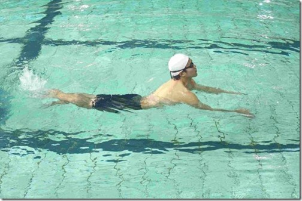
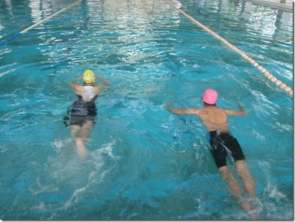
【圖】出發前十秒讓身體呈水平有利於出發
從沙灘衝向浪潮先以海豚跳前進
以台灣的賽事來說，台南安平與墾丁南灣的起點都在沙灘上，選手必須跑一小段才能入水。跑步一定比游泳快得多，所以應該盡量往前跑到「小腿無法抬出水面」為止才開始游。因為沙灘的水域是由淺及深，如果太早開始游，身體和手都會碰到沙子，也會損失許多時間。所以當水深還在肚臍以下時，可利用「海豚跳」前進。分解動作見下圖：技巧是用雙腳的力量蹬地向斜前方跳出(01)，隨即張開手臂向前擺動增加前進動能(02)，接著兩手並攏讓大臂壓著後腦勺同時縮下巴向水中鑽(03)，鑽入水中後手掌扳住地面向後撐同時下巴向上仰出水，持續海豚跳這個動作，直到水深超過肚臍再開始游。(但要跑到何時才開始用海豚跳呢？在沙灘淺水區要怎麼跑才比較省力呢？請見本文最後一節)
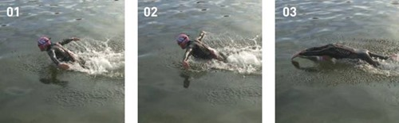
【圖】（圖片摘自 Swim Smooth）
海豚跳也是破浪的技巧，有些比賽場地的沙灘很淺，風大時淺灘的浪會又高又碎，在大浪來襲前先用海豚跳鑽入浪谷，就可以避免被浪打回去。
浮台跳水
浮台跳水所需要的技巧比較高，若沒有經過練習，不建議採用海豚式騰躍入水的方式。如果技巧不純熟，除了臉或胸口會因撞擊水面而疼痛之外，泳鏡也很可能翻掉/進水而讓你損失更多時間。所以如果你參加的比賽是在浮台上出發，但你還不會跳水，建議如下圖中幾位坐在浮台上的選手般，出發時先用手頂一下讓身體慢慢沒入水中後再開始游。
但亞運、奧運或國際的 ITU 鐵人三項賽都是在浮台上出發，若想參加類似的比賽，跳水必然是必備的技術之一。台灣目前在浮台上出發比賽為「宜蘭梅花湖鐵人三項賽」。
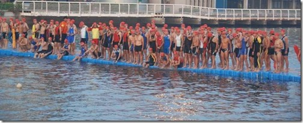
假若你想練跳水，下面有兩個重點需要注意：一、先屈膝再向 45 度斜前方跳出，跳出後要縮下巴（這樣才能頭頂入水，把臉藏在內側，不讓泳鏡直接衝擊水面）；二、雙腳同時併攏伸直（如此膝蓋才不會打出水花，身體也能流暢地鑽入水中）。
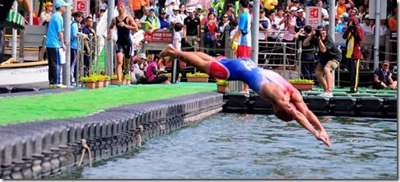
【圖】跳出後要縮下巴同時用雙手夾緊後腦，兩手並攏伸直，手指先入水
#####
目測的重要性
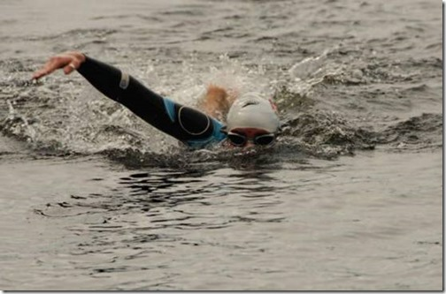
【圖】抬頭目測時只讓眼睛露出水面即可(圖片摘自 Swim Smooth)
在開放式水域中的目測技巧跟你的泳技本身一樣重要，如果你還不習慣在開放式水域中游泳，比賽中平均每一百公尺會比你平時在泳池多花 5-20 秒的時間。原因簡單來說就是無法游直線，而且大多數都以「Z 字型」方式前進。從下面的影片中我們可以很清楚地看到大部分的選手都不是游直線(而且糟糕的是大多數人都以為自己是直線前進)，而是游得「左搖右擺」：
【影片】檢視多位鐵人選手在開放式水域中的游泳軌跡
最佳的目測技術可見下圖：一開始只靠右臂前伸支撐在水中（稍微向下壓）只讓眼部露出水面（鼻、嘴與下巴仍沒在水中），再順著轉肩與划動右手，此時左手入水同時左肩向前延伸，順勢轉頭向右側換氣。目測和換氣不要同時進行，那會使你的頭抬得太高，增加太多水阻。這項技術可以讓你在開放式水域中不迷失方向、游得直、不游彎路。
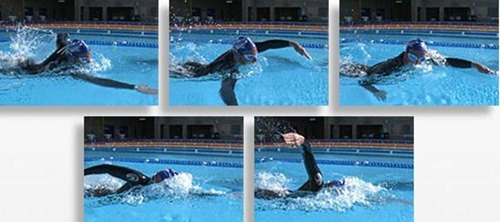
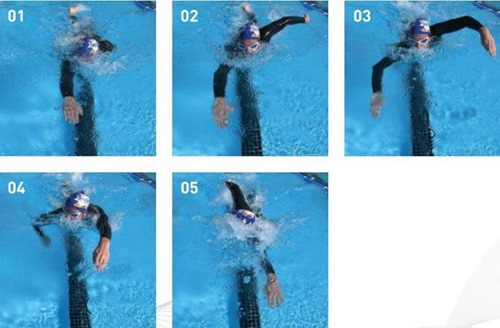
【圖】目測技術的分解動作（圖片摘自 Swim Smooth）
跟游讓你最多省 25%的體力
跟游並不像聽起來那麼簡單，雖然只是跟在別人後面(或旁邊)游，但仍需要一定的技巧才能跟得住、跟得緊，也需要相當的經驗才能選對人、跟對人、跟對方向。
在鐵人三項賽中假若你跟游的選手實力跟你一樣，這會讓你在後面兩項騎-跑時仍保有活力；假若你跟的選手游泳能力比你強，你可能會跟得很辛苦，若他的游速超出你的能力範圍之外，你應該放棄他以自己步調獨游，或重新選擇其他跟游的對象，以免影響後面兩項的表現。
跟游有兩種方式：第一種方式最常見，即是直接跟在正後方，盡可能地靠近但不接觸到他的腳趾（如果你一再碰觸到前方泳者的腳趾，會干擾到他的划頻與打水節奏）。第二種方式的技巧性比較高，緊鄰在其他選手的外側，頭的位置大約是在他的臀部，離他愈近愈好，但盡量不要碰觸到他。為什麼選在臀部的位置呢？因為領游者所切開水面會形成一個「八」字形的水波，假設跟得太前面你反而也要自己破水，跟得太後面跑到腳趾附近，跟游的優勢反而下降，而且領游者打水的水花就在頭旁，會影響你換氣的節奏。因此第二種的好處是你比較不會吃水花，因為你的頭在他的臀部附近。不像第一種方式直接跟在腳趾後方時，對方打水的水花會造成視線不清，抓水時抓到過多氣泡，抬頭目測時也會受到前方選手的遮蔽而變得更困難。
第二種游在領游者臀部旁的跟游方式所獲得的「破水效益」比第一種好，但前提是你要跟得夠近，而且手臂的划頻與領游者一致，才不會打在一起。
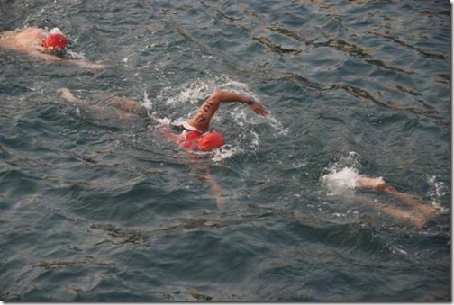
【圖】第一種跟游方式
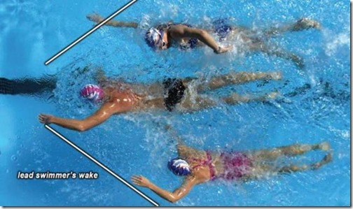
【圖】第二種跟游方式（圖片摘自 Swim Smooth）
###
沙灘出水
在沙灘淺水區跑步的技巧如同下圖中間位置的選手，抬起膝蓋的同時「小腿往外翻」，如此一來你的膝蓋可以不用抬太高，小腿也能完全在水面上，這樣跑起來才不會被水絆住而跌倒。像畫面中最前面兩位選手就是因為腳沒有抬高，被水絆倒。這個技巧在出發和上岸時都用得到。
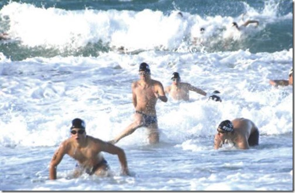
【圖】（圖片摘自 Swim Smooth）